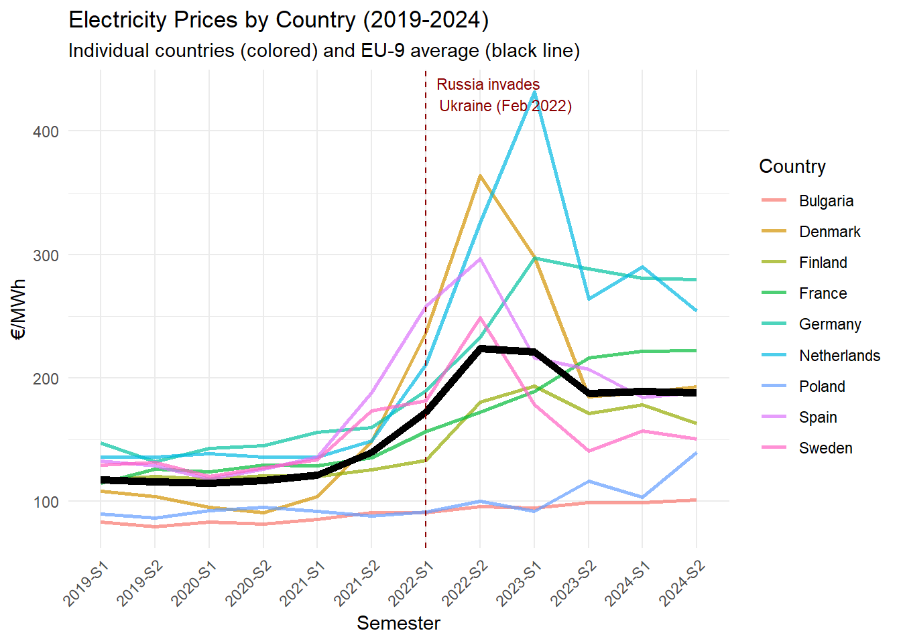

| Attribute | Value |
|---|---|
| Dataset | Energypricescleaned.csv |
| Number of Rows | 11 |
| Number of Columns | 13 |
| Column Names | Country, 2019-S1, 2019-S2, 2020-S1, 2020-S2, 2021-S1, 2021-S2, 2022-S1, 2022-S2, 2023-S1, 2023-S2, 2024-S1, 2024-S2 |
Loading and description of the files
Raw Data
Raw data files are stored in the /data folder:
Energy Prices: EnergyPricesNewVersion.csv - Electricity and gas prices for European countries
Gas Prices: Dutch TTF Natural Gas Futures Historical Data.csv - TTF (Title Transfer Facility) natural gas prices
Pipeline Importations : Imports_pipeline.csv - Importations from Russia by pipeline
Liquified Natural gas importations : LNG_2019.csv - Annual importations of natural gas from Russia by boat (also provided for 2020, 2021, 2022, 2023 and 2024). All years from 2019 to 2024 are combined the the data frame LNG_imports
Electricity production by sources : Combustible_fuels.csv - Electricity produced by combustible fuels (also provided for Fossil fuels, Hydro, Natural gas, Nuclear, Renewable sources, Solar, Wind and Total)
Cleaned Data
Processed data files are in the /cleaned_data folder:
Electricity Prices: Energypricescleaned.csv - cleaned household electricity prices for nine European countries (France, Germany, Spain, Denmark, Netherlands, Poland, Bulgaria, Sweden, and Finland) from 2019 to 2024, bi-annual data, prices excluding taxes and levies
Gas Prices: Gaspricescleaned.csv - cleaned Dutch TTF natural gas prices with monthly closing prices in euros per megawatt-hour for the same time period
Importations from Russia : Total_imports.csv - cleaned importations of natural gas from Russia, from both pipeline and boat, from 2019 to 2024 for the nine selected European countries, in million of cubic meters, monthly data.
Electricity Production by sources : all_sources.csv - cleaned decomposition of electricity production by source from 2019 to 2024 for the nine selected countries, with the total of electricity produced in the country, monthly data. We can derive a data frame for each country by using : sources_list and sources_list$Country
Sources description
This project relies on two primary data sources that provide comprehensive and reliable information on European energy markets during the 2019-2024 period, encompassing both the pre-crisis baseline and the tumultuous energy crisis that followed Russia’s invasion of Ukraine in February 2022.
Eurostat - Energy Database (https://ec.europa.eu/eurostat/data/database)
Eurostat is the official statistical office of the European Union. It collects and publishes statistics from all EU member states using standardized methods, which makes cross-country comparisons reliable and meaningful for our analysis.
We obtained three main datasets from Eurostat’s energy database: electricity prices, electricity generation by source, and natural gas imports. The standardized collection process ensures that data from different countries can be directly compared; this is crucial for understanding how different European countries responded differently to the energy crisis. The electricity price data covers household consumers with medium consumption (2,500-5,000 kWh per year), and prices exclude taxes and levies so we can compare pure market prices across countries. The electricity generation data breaks down production by fuel type: combustible fuels, hydro, solar, wind, nuclear, natural gas, and renewables/biofuels. This breakdown lets us analyze how each country’s energy mix affected its vulnerability to the gas price shock. The gas import data is particularly interesting because it separates pipeline imports from LNG (Liquified Natural Gas) imports. This distinction is important for tracking how European countries shifted their supply sources after Russia reduced gas deliveries in 2022.
All Eurostat data is free to download in CSV format and includes detailed documentation. For our analysis, we use monthly data (gas imports and electricity generation) from January 2019 to December 2024, and bi-annual data (electricity prices) from 2019-S1 to 2024-S2. This six-year period captures both normal market conditions before the crisis and the dramatic changes that followed.
Investing.com - TTF Natural Gas Futures (https://www.investing.com/commodities/dutch-ttf-gas-c1-futures-historical-data)
To complement Eurostat’s official statistics, we used Investing.com as our source for natural gas price data. Investing.com is a major financial markets platform that aggregates and publishes real-time and historical trading data from exchanges worldwide. Unlike government statistical offices that report retrospective averages, Investing.com provides actual market trading data, which better captures the day-to-day price volatility that characterized the 2022 energy crisis. We collected historical data for TTF (Title Transfer Facility) Dutch natural gas futures, the European benchmark for wholesale gas prices. The platform provides free access to daily closing prices with downloadable CSV files, making it straightforward to integrate this data with our Eurostat datasets. The platform’s data reliability comes from its direct connection to ICE (Intercontinental Exchange) trading data, and its wide use by financial analysts and researchers makes it a standard reference for energy market analysis.
World Integrated Trade Solution (https://wits.worldbank.org/)
The WITS (World Integrated Trade Solution) is an online platform developed by the World Bank in collaboration with other organizations such as the World Trade Organisation or UNCTAD. This platform provides access to global trade and tariff data. Unlike Eurostat, WITS provides data on the LNG importations from different countries, included Russia. This allowed us to complement our data collection in order to have a more precise and accurate analysis. The platform provides free access to annual LNG importation in CSV format, which makes it easier to add to our Eurostat data set. The reliability of this database relies mainly on the fact that the platform collects and aggregates its data from national customs authorities such as the UN Comtrade (United Nation Trade data base), WTO, the World Bank… The variety of international agencies makes it possible for the platform to double check the data it provides, complement the missing datas or correct the incoherences if needed. WITS’ datas are also often used by the European Commission which attests of its reliability and transparency.
Description of the data collection
This data selection examines electricity and natural gas prices during the 2022 European Energy Crisis using data from two authoritative sources covering nine European countries (France, Germany, Spain, Denmark, Netherlands, Poland, Bulgaria, Sweden, and Finland) from 2019 to 2024.
Electricity Prices for Household Consumers (Code: nrg_pc_204): This dataset is sourced from Eurostat and accessible via the Eurostat Data Browser. The dataframe measures electricity prices in euros for all 27 countries of the European Union from 2007 to 2025, with data collected bi-annually. For our purposes, we selected data for our nine chosen countries covering the period from 2019 to 2024, using prices that exclude taxes and levies.
Dutch TTF Natural Gas Prices: This dataset is sourced from Investing.com and provides monthly closing prices in euros per megawatt-hour. The Dutch TTF (Title Transfer Facility) gas market serves as the main benchmark for natural gas trading in Europe, setting the wholesale prices used in most European contracts. This makes it an essential indicator for understanding gas price movements across the continent during the crisis period.
Pipeline Importations (Code: nrg_ti_gasm) : This data set is sourced from Eurostat and accesible via the Eurostat Data Browser. The initial data set measures the amount of natural gas in million of cubic meter that is imported by all 27 countries from global partners, from 2008 to 2025, with data collected monthly . We selected Russia as a partner and our nine countries as geopolitical entities to keep only the dependency on Russian importations over our time period (2019-2024)
Liquified Natural Gas Importations : When looking at the pipeline importations, we realized that the Eurostat data frame indicated that some countries didn’t import any Russian gas during our time period. If it can be coherent for countries such as Denmark (which mainly on renewable sources), it is absolutely not true for countries such as Germany that are highly dependent on Russian importations. The fact remains that these countries do not imports Russian gas by pipeline, but by boat in a liquefied form. Therefore, to have a more precise analysis, we have decided to add the LNG (Liquefied Natural Gas) importations. This data set is sourced from the WITS, World Integrated Trade Solution (a database developed by the World Bank in collaboration with others organizations) and accessible via WITS.com. This data set measures the amount of LNG in kilograms imported by countries all around the world from different partners, from 1992 to 2024, with data collected annually. We decided to select our nine countries (if they do import LNG) as reporters and the Russian Federation as partner.
Electricity production by source (Code: nrg_cb_pem): This data frame is sourced from Eurostat and accessible via the Eurostat Data Browser. The original data set provides the net generation of electricity by source / type of fuels in gigawatts per hour, from 2008 to 2025, for all 27 european countries, with data collected monthly. For our nine countries, we decided to select only the most relevant and known sources out of the 23 types of fuels provided and decided to keep the total of energy generated in order to compute the energy mix later.
Data summary
Electricity prices
Gas prices
| Attribute | Value |
|---|---|
| Dataset | Gaspricescleaned.csv |
| Number of Rows | 6 |
| Number of Columns | 15 |
| Column Names | year, Jan, Feb, Mar, Apr, May, Jun, Jul, Aug, Sep, Oct, Nov, Dec, S1, S2 |
Gas Importations
| Nom | Gas Importations |
| Number of rows | 711 |
| Number of columns | 1 |
| Unit | Million of cubic meters |
Electricity generation by source
For all sources
| Nom | Electricity generation by source |
| Number of rows | 720 |
| Number of columns | 1 |
| Unit | Gigawatts per hour |
For one country
| Nom | Electricity generation by source for France |
| Number of rows | 80 |
| Number of columns | 10 |
| Unit | Gigawatts per hour |
Data cleaning description
All data cleaning process can be found here : Data Cleaning
Electricity Prices
For the electricity prices, we started with the EnergyPricesNewVersion.csv file containing semi-annual electricity prices for European household consumers. The original file had metadata , so we extracted only rows 2 to 10 which contained the actual country data. Then, we suppressed the useless columns and renamed the remaining one in a more conventional format. The main challenge was handling the European number format. The original values used commas as decimal separators and prices were in €/kWh. We replaced commas with periods and multiplied by 1000 to convert everything to €/MWh, making it easier to compare with gas prices.
Gas Prices
For gas prices, we used the Dutch TTF Natural Gas Futures Historical Data.csv file with daily price data. We kept only the date and price columns, then filtered for 2019-2024. The dates needed to be converted to proper date format, and we removed commas from the price values (which were formatted like “1,234.56”) before converting to numbers. Since our electricity data is semi-annual, we needed to aggregate the daily gas prices. We reorganized the data into a monthly format (one column per month, one row per year), then calculated semester averages: S1 (January-June) and S2 (July-December). Finally, we exported both cleaned datasets to CSV format with values rounded to one decimal place to keep the files clean and readable.
Electricity production by source
The original data set provides one data frame by type of fuel. Therefore, we have 8 data frames, each one measuring the production of electricity for the corresponding source in the nine countries.
We loaded each data frame using the read.csv function and suppressed the useless columns (last update, frequency…). Then we renamed the remaining columns into Country, Source, Year and Electricity_prod.
Then, we merged all the data frames in order to get all the sources in on frame using the function bind_rows. The function pivot_wider allows us to have a cleaner frame with a column per source Finally, we created a list by country from the all sources frame using the function split. This make it easier to extract one data frame per country.
Importations
For the importations, we started by cleaning the 2 initial frames : pipeline and LNG
For the pipeline, we simply loaded the csv, suppressed the irrelevant columns and renamed the remaining ones.
For each LNG data frame (one for each year), we also suppressed the irrelevant columns, renamed the remaining ones and used the pivot_wider function. Then, we merged all the years in one single data frame using the bind_rows function. Since all the values in the data frames where characters, we changed it to numeric (except for the Year column) and replaced the NA by 0 (since it wouldn’t change the result of our analysis). The next issue is that the LNG importations where expressed in kilograms, and the pipeline in MCM (million of cubic meters). Therefore, we decided to convert the LNG in MCM by dividing each value by the LNG density * 1 000 000.
Another issue was that the LNG importations where collected annually and not monthly. We created a column of the form Year-Month using the str functions. We then divided each value by 12 to have a distribution of the annual quantity imported across the 12 months.
Then, in order to join both data frames, we extracted the keys (Year and Country) from the pipeline importation data frame and added them to the LNG importations thanks to the left_join function. We also used left_join to add the LNG importations to the pipeline importations and get the Total importations data frame. Finally, we created a column thanks to mutate to sum both importations and get the total importations.
Key Variables
Electricity Prices:
Semi-annual household electricity prices (€/MWh) for 9 European countries (Bulgaria, Denmark, Germany, Spain, France, Netherlands, Poland, Finland, Sweden) from 2019-S1 to 2024-S2, excluding taxes and levies. This variable captures the dramatic price increases during the 2022 energy crisis, with prices more than doubling in some countries like the Netherlands (from 136 €/MWh in 2019-S1 to 432 €/MWh in 2023-S1) before gradually declining.
Gas Prices:
Monthly Dutch TTF (Title Transfer Facility) natural gas futures prices (€/MWh) from January 2019 to December 2024, representing the European benchmark for natural gas pricing. The dataset includes semester aggregates (S1: January-June, S2: July-December) and shows the unprecedented price spike in 2022, with August reaching 240 €/MWh compared to pre-crisis averages of 10-15 €/MWh.
Gas Importations:
Monthly natural gas imports from Russia by the 9 European countries (Bulgaria, Denmark, Germany, Spain, France, Netherlands, Poland, Finland, Sweden) from January 2019 to December 2024, measured in million cubic meters (MCM). The data distinguishes between pipeline imports and LNG (Liquified Natural Gas) imports, tracking the dramatic shift in European energy supply following reduced Russian gas deliveries after February 2022.
Electricity Generation by Source:
Monthly electricity production (GWh) for each of the 9 countries from January 2019 to December 2024, decomposed by energy source including combustible fuels, hydro, solar, wind, nuclear, natural gas, and renewables/biofuels. This variable enables analysis of how different countries’ energy mixes (e.g., France’s nuclear-heavy production vs. Germany’s renewable-focused approach) affected their vulnerability to the gas price shock and subsequent electricity price increases.
Research Question
The 2022 European Energy Crisis represents one of the most significant economic shocks to affect the European Union in recent decades. Triggered by Russia’s invasion of Ukraine in February 2022 and the subsequent disruption of natural gas supplies to Europe, this crisis sent energy prices soaring to unprecedented levels, threatening economic stability and household welfare across the continent. Our research seeks to understand the dynamics and heterogeneity of this crisis by examining how electricity and natural gas prices evolved across nine European countries with diverse energy profiles.
Central Question: How did electricity and natural gas prices respond to the 2022 energy supply shock across different European countries, and what role did national energy mix compositions play in mediating these price responses?
We chose nine countries for our analysis—France, Germany, Spain, Denmark, Netherlands, Poland, Bulgaria, Sweden, and Finland—to capture the diversity of European energy systems and how they responded differently to the crisis.
France relies heavily on nuclear power (around 70% of its electricity), which should theoretically protect it from gas price shocks. Germany, on the other hand, had become highly dependent on Russian gas imports and had to quickly reorganize its energy supply after 2022. Spain represents Southern Europe with its own infrastructure and import patterns. Denmark is interesting because it has invested heavily in wind energy and has relatively low dependence on imported gas. The Netherlands hosts the TTF gas hub, which sets the benchmark price for European gas trading. Poland and Bulgaria represent Central and Eastern European countries with historical energy ties to Russia. Finally, Sweden and Finland give us the Nordic perspective, with their strong hydroelectric and renewable energy capacity. This mix of countries lets us compare how different energy strategies: nuclear-heavy (France), gas-dependent (Germany), renewables-focused (Denmark, Sweden), or transitioning systems (Poland, Bulgaria); performed during the same crisis.
Our analysis focuses on the period from 2019 to 2024, allowing us to establish pre-crisis baseline trends and observe both the acute crisis phase in 2022-2023 and the subsequent adjustment period. By examining electricity prices alongside natural gas prices, we can investigate the transmission mechanisms through which gas price shocks affected electricity markets.
Several key sub-questions guide our investigation. First, we examine the timing and magnitude of price increases: did all countries experience simultaneous shocks, or were there temporal variations reflecting different supply vulnerabilities? Second, we explore price convergence and divergence: did the crisis lead to greater price harmonization across Europe, or did it exacerbate existing price differentials? Third, we investigate the relationship between gas and electricity prices: how tightly coupled were these markets, and did this coupling vary across countries?
This crisis serves as a natural experiment for understanding how integrated European energy markets function under extreme stress. Also, by examining how different energy mixes performed during the crisis, we can inform debates about optimal transition pathways that balance climate objectives with economic resilience.
The main observed variable: Electricity prices between 2019 and 2024
Household electricity prices represent our primary outcome variable of interest, as they directly reflect the impact of the 2022 European energy crisis on consumers across nine European countries. This analysis examines how variations in Russian gas import dependence, natural gas price shocks, and national electricity generation mixes (nuclear, renewables, fossil fuels) influenced the magnitude and timing of electricity price increases during the 2022-2024 crisis period
Graphical representation

```